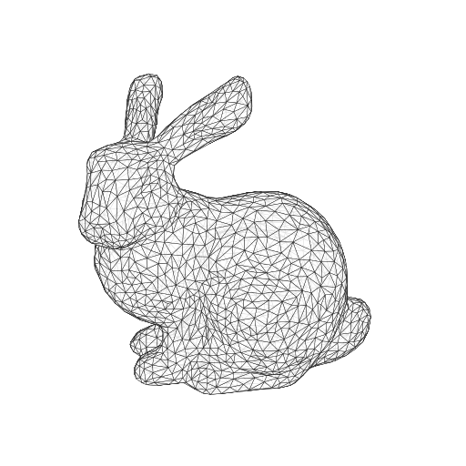

Mesh
Mesh
Quick documentation

Meshes are collection of triangles that can be filled, stroked and textured.
import numpy as np
import matplotlib.pyplot as plt
from gsp import glm, core, visual, transform
canvas = core.Canvas(512, 512, 100.0)
viewport = core.Viewport(canvas, 0, 0, 512, 512)
camera = glm.Camera("perspective", theta=-20, phi=2.5)
V,Vi = glm.mesh("data/bunny-4096.obj")
EC = core.Color(0.00, 0.00, 0.00, 1.00)
FC = core.Color(1.00, 1.00, 1.00, 0.85)
mesh = visual.Mesh(V, Vi, None, FC, EC, 0.25)
mesh.render(viewport, camera.model, camera.view, camera.proj)
camera.connect(viewport, "motion", mesh.render)
plt.show()
__init__
__init__(
positions,
face_indices,
line_indices=None,
fill_colors=Color(1, 1, 1, 1),
line_colors=Color(0, 0, 0, 1),
line_widths=0,
)
Create a visual for one or several meshes using positions and face_indices (that describes triangles) and line_indices (that describes paths). Each triangle can be painted with fill_colors and paths can be stroke using line_colors and line_widths.
Notes on matplotlib implementation
-
Line indices are not used and lines always correspond to triangles edges. We could use an additional path collection for rendering lines but the, we could not sort paths/triangles accross the two collections.
-
Fill colors are always related to faces because matplotlib does not implement barycentric interpolation inside a triangle.
Parameters:
| Name | Type | Description | Default |
|---|---|---|---|
positions |
Transform | Buffer
|
Vertices positions (vec3) |
required |
face_indices |
Transform | Buffer
|
Face indices (int) |
required |
line_indices |
Transform | Buffer | None
|
Line indices (int) |
None
|
fill_colors |
Transform | Buffer | Color
|
Faces color (vec4) |
Color(1, 1, 1, 1)
|
line_colors |
Transform | Buffer | Color
|
Line colors (vec4) |
Color(0, 0, 0, 1)
|
line_widths |
Transform | Buffer | Measure
|
Line widths (scalar) |
0
|
render
Render the visual on viewport using the given model, view, proj matrices
Parameters:
| Name | Type | Description | Default |
|---|---|---|---|
viewport |
Viewport
|
Viewport where to render the visual |
required |
model |
mat4
|
Model matrix to use for rendering |
None
|
view |
mat4
|
View matrix to use for rendering |
None
|
proj |
mat4
|
Projection matrix to use for rendering |
None
|